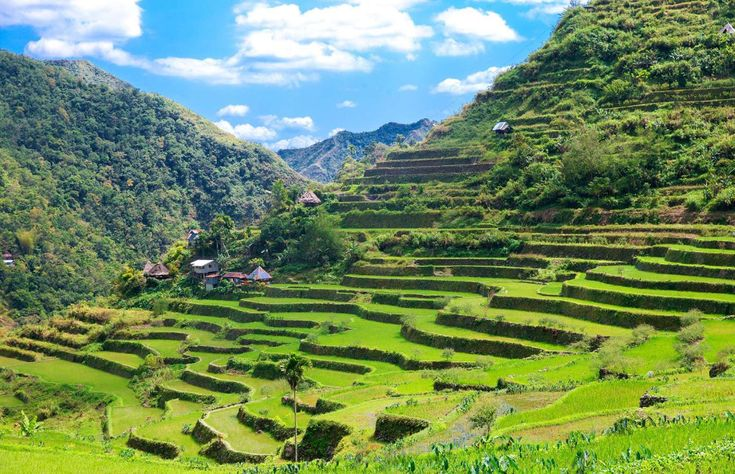

CAR Travel Guide: Best time to go + How to get there
Nestled among the breathtaking peaks and verdant valleys of the Philippine archipelago lies the Cordillera Administrative Region (CAR). This captivating region is a treasure trove of natural wonders, cultural richness, and adventure waiting to be explored. Whether you're an avid hiker, a cultural enthusiast, or simply seeking a serene escape, the Cordilleras offer something for every traveler.
Choosing the ideal time to visit the Cordillera Administrative Region largely depends on your preferences and the activities you wish to engage in. Generally, the region experiences two distinct seasons: the dry season and the wet season.
The dry season, which runs from November to April, is often considered the best time to visit. During these months, you can expect clear skies, sunny days, and cool temperatures, making it perfect for outdoor activities like trekking, hiking, and sightseeing. However, it's important to note that temperatures can drop significantly, especially in higher elevations, so be sure to pack accordingly.
By Air:The quickest way to reach the region is by flying into Baguio City, the capital of CAR. Loakan Airport in Baguio offers domestic flights from Manila and other major cities in the Philippines. From the airport, you can easily reach various destinations within the region via land transportation.
By Land: If you prefer a scenic journey, traveling by land is an excellent option. Several bus companies operate routes to major cities in the Cordilleras, such as Baguio, Banaue, and Sagada, from Manila and other nearby provinces. The roads wind through picturesque landscapes, providing glimpses of terraced rice fields, towering mountains, and quaint villages along the way.
Best place to visit
Banaue Rice Terraces: The Eighth Wonder of the World
Marvel at the breathtaking Banaue Rice Terraces, carved into the mountains over 2,000 years ago by the Ifugao people. Trek through the terraces and surrounding villages to immerse yourself in the rich culture and traditions of the Ifugao tribe.

Visit the Banaue Museum to learn about the history and significance of these ancient rice terraces.
Where to See and Do in Coldillera Administrative Region

Savor the Charm of Baguio City
Visit Burnham Park for leisurely boat rides and strolls amidst beautiful gardens. Explore Mines View Park for panoramic vistas of the surrounding mountains and valleys. Discover the vibrant culture and art scene at Tam-Awan Village and BenCab Museum.
Explore the Enigmatic Sagada
Delve into the mysteries of Sagada's caves, including Sumaguing Cave with its impressive rock formations and underground rivers. Visit the hanging coffins of Echo Valley and learn about the indigenous burial traditions. Catch the sunrise at Kiltepan Viewpoint for a breathtaking start to your day.

Conquer the Summit of Mt. Pulag
Embark on an exhilarating trek to the summit of Mt. Pulag, the highest peak in Luzon. Witness the surreal "Sea of Clouds" phenomenon as you ascend to the summit. Camp overnight and wake up to a stunning sunrise amidst the sea of clouds.
Encounter Tradition in Kalinga
Journey to Kalinga and meet Whang-Od, the legendary mambabatok (traditional tattoo artist). Get inked with a traditional Kalinga tattoo and immerse yourself in the rich culture of the region. Explore the picturesque landscapes and interact with the hospitable locals.

Enjoy Festivals and Celebrations
Experience the vibrant Panagbenga Festival in Baguio City, featuring colorful flower floats and street dancing. Join the lively Lang-ay Festival in Bontoc, celebrating the diverse cultures of the Cordillera tribes. Participate in the Pahiyas Festival in Kalinga, known for its colorful decorations and vibrant festivities.
Foods
Pinikpikan
A traditional dish made with chicken, marinated in spices, and beaten with a stick before cooking. Known for its unique smoky flavor and tender meat. Often served with native vegetables and rice.
Ginataang Langka
Young jackfruit cooked in coconut milk with shrimp paste and spices. A creamy and flavorful dish with a hint of sweetness from the jackfruit. Best enjoyed with steamed rice.

Etag
A traditional smoked meat of the Igorot people, made from pork or beef. Meat is cured, smoked, and aged for weeks or months, resulting in a distinct flavor. Etag is often used as a flavoring agent in various dishes, such as soups and stews.
Pinuneg
A hearty sausage made from ground pork or beef mixed with rice and spices. Stuffed into pig intestines and boiled until cooked. Often served with native vinegar dipping sauce and rice.
Ube Halaya
A sweet dessert made from purple yam, coconut milk, and sugar. Cooked until thick and creamy, then garnished with latik (fried coconut milk curds). A popular dessert during special occasions and festivals.